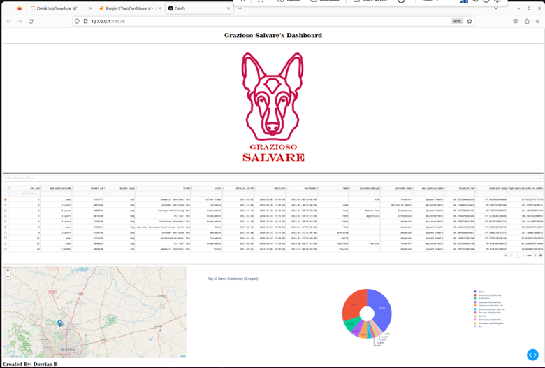
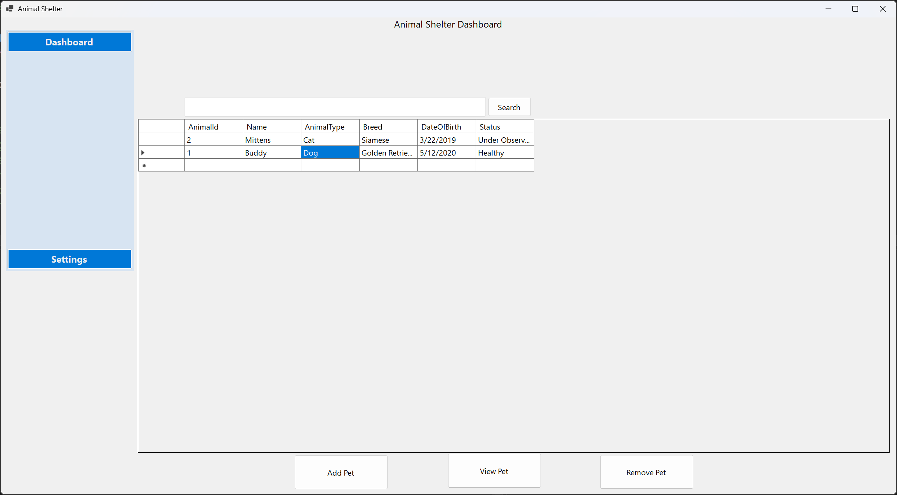
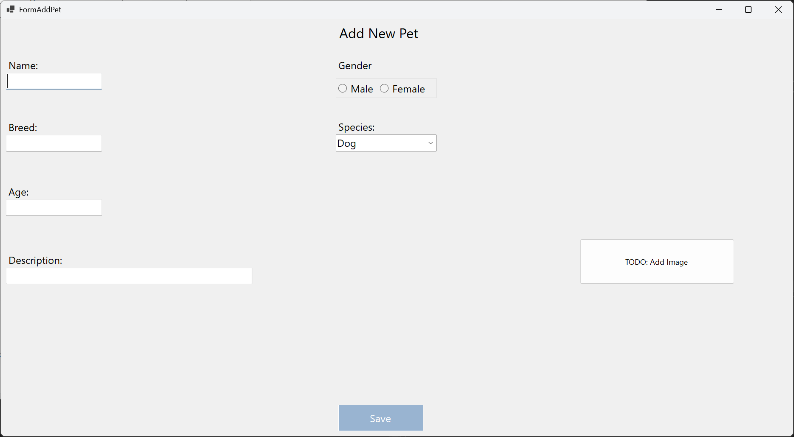
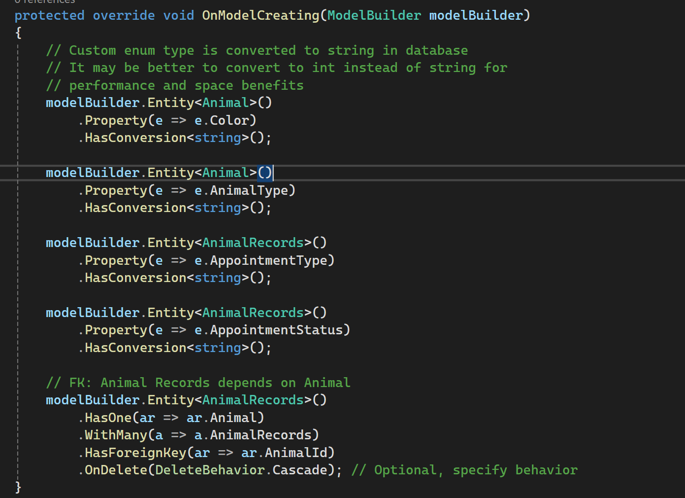
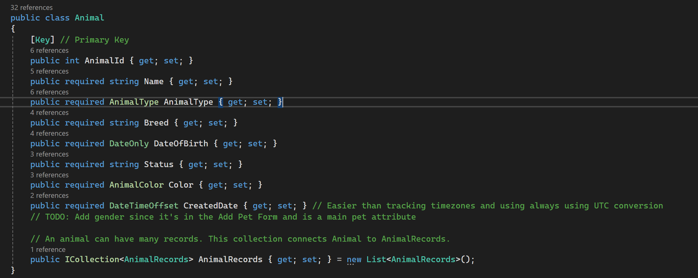

The database artifact is an overhaul of the AnimalShelter project from a web application to a desktop application. Originally focused on Python and MongoDB it’s being converted to WinForms (C#) and SQLite. Originally the overhaul was intended to use SQLServer, however from testing I realized it would be easier to demo using SQLite with the need to set up a complicated system. This brought on its own challenges though. The core of EFCore was still there with models, dbsets, and migrations for controlling scheme, but it had some key differences. The first was the write ahead log (.WAL) file that was disabled since concurrency wasn’t a focus of this application. If concurrency was required SQLServer may be a better choice to be hosted on a server machine. It also required some changes for foreign keys that were solved by swapping data annotations on the models to the Fluent API using the model builder.
One of the largest issues in building the UI was working with the GridView. Loading and saving the database models required creating binding sources and managing state for a selected animal so the View and Delete options could track the correct entity. Additionally managing column headers needed manual definitions and reflection to use the models PropertyInfo map the values to. Using reflection was a new challenge both becuase of the language, but also conceptually. While it's avoided due to it not being safe it was also the most reliable way to consistently bind the model to the grid.
 Using EFCore was a large undertaking itself. On top of learning .NET, EntityFramework had a lot of foreign concepts. The first was understanding how to create and bind models using data annotations and or the Fluent API created issues in the initial setup. Afterwards understanding the code first methodology instead of database first required use of migrations causing confusion in the differences between ensure created vs .migrate(), and creating foreign keys. Finally, learning how EFCore worked when dealing with Enums or unsupported database values. I currently store values like Color, Species, AppointmentType, etc., as enums and the conversion from enum to string and back required its own handling which caused issues when querying data for the search results.
 Overall these enhancements were designed with security in mind and using industry standards. EFCore is one of, if not the, most used ORM for .NET development and helps with preventing security risks like SQL injections due to its use of LINQ and modeling binding rather than raw queries. It also helped me get accustomed to reading official documentation. Understanding the process of creating a sample project, reading best practices, and comparing alternatives is something that’s expected and this was a great way to learn that since it had good standards and examples to follow.
While the UI isn't a major concern, I would like to continue working on this project until it's at least feature complete. Getting more practice with EntityFramework as well as using a proper feature branches to track project progress is something I'd like to practice.